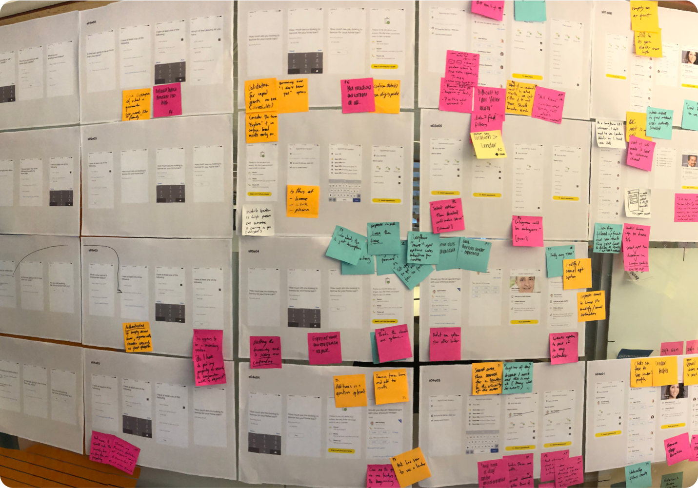
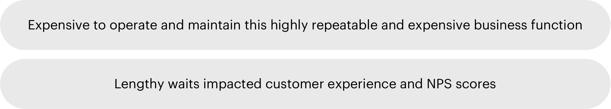
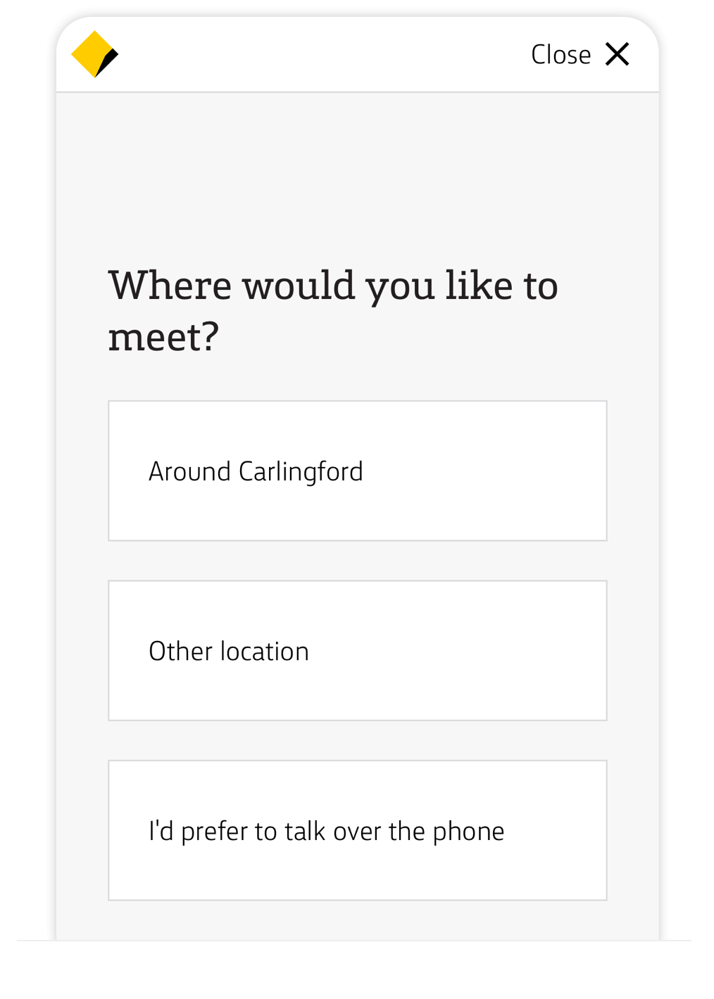
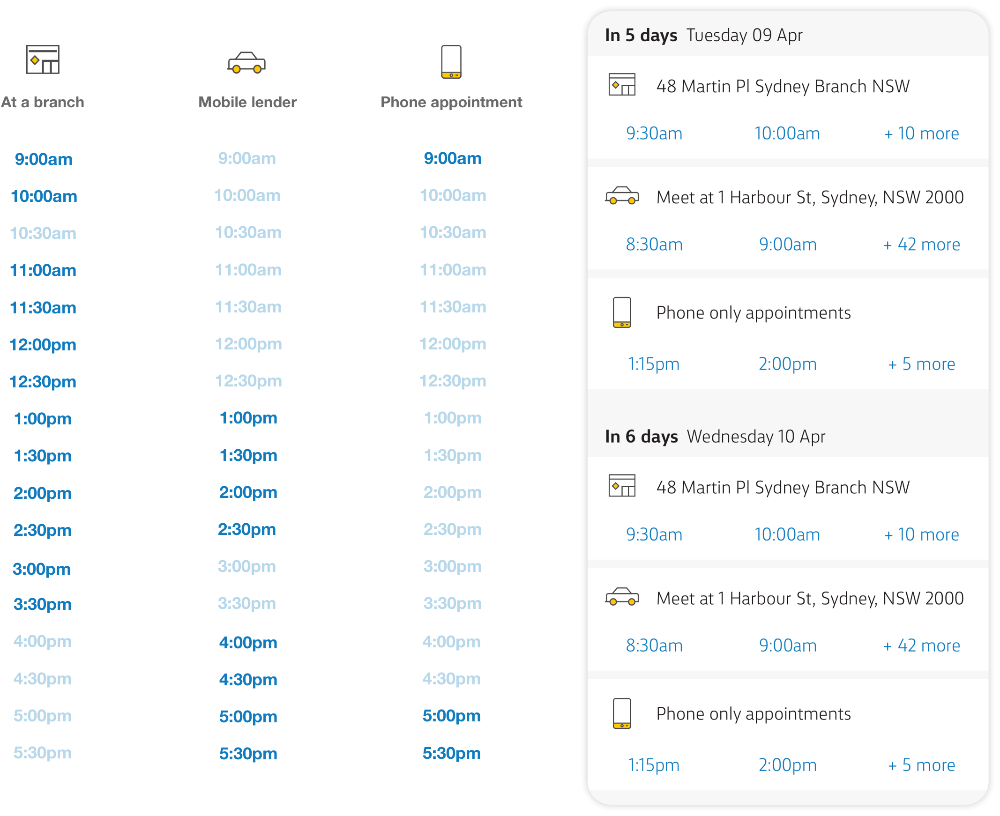
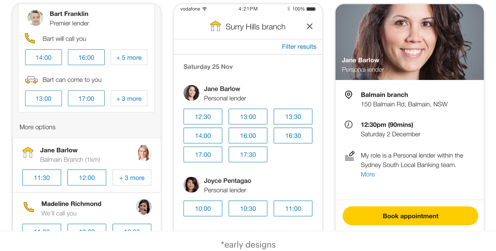
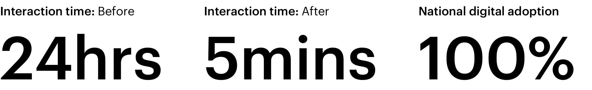
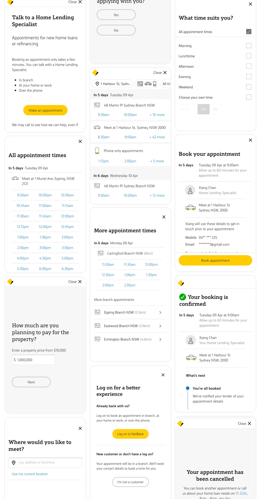

Background: CommBank holds the largest share of home loans in Australia. It’s reputation to service and maintain customer satisfaction is of the highest priority and the fact is, customers choose CommBank because of the flexibility to transact digitally and seamlessly.
In 2016, the bank embarked on a multi-year program with the goal of systemising the profiles and calendars of thousand of lenders. As a result, the bank has up to the minute visibility of the schedules of our entire frontline workforce.
The final strategic maneuverer was to replace a decade old manual process of back and forth calling to schedule appointments with Home lenders. Finally in 2018, we released ‘Digital Appointment Booking’ nationally to all current and prospective customers.
User testing and interviews
We listened to users that had recently taken out mortgages as they talked about the rollercoasters of emotions in the home buying process, being able to speak with a trusted advisor and build a relationship was core to a successful transaction.
Book appointment user flow
This 5 minute digital interaction replaces a series of manual back-office process that often cumulated in a 24 hour turn-around.
Design process and research activties
We spent the next 8 months performing research like speaking with key personnel including home lenders, customer service operators and the wider stakeholder team to gain broad understanding of the workforce, the physical and digital environments they inhabit and the interactions that occur that forms the basis of one of the largest operations in Australia.
Research theme 1: contextual analysis
Dedicated call-center staff are designated to help customers find an appropriate lender. This is an often-time-consuming ordeal of matching schedules in the diary, catering for specialised lending needs and determine whether a dedicated phone appointment with a lender would suffice for this interaction.
Research theme 2: flexibility is key
CommBank customers are often time poor and love the flexibility to conduct their business online or via voice call. We also offer customers the ability to visit a branch or our lenders could meet at a designated location. We gruelingly synthesised the design into 3 key actions:
We found: Providing guidance and allowing users fine tune their filters before seeing appointment results provided a positive experience. A significant portion of customers prefer to conduct meetings over the phone and others that enjoy meeting in person. This triage-point allows us to skip over redundant tasks like specifying location when a phone call may be sufficient.
Research theme 3: designing the information
We could have tens of thousands of available appointments on any given month. Overwhelming customers with too many options was a real risk.
We found: Users were able to build mental model of our calendar pattern. This is that, on any given day, we would only show no more than 9 actionable options per day (as seen below) while also providing an indication of the capacity of each appointment mode with (+ n more).
Research theme 4: no replacing human connection
People see faces and the connection is instant - this is human nature. We have corporate profile-images of all our front-line staff members and this became a major theme in all our designs. Naturally, we used these images as a part of our initial testing round.
We found: Users responded exceptionally to profile images as we had expected. But we began to notice, users were overwhelmingly sorting appointment results by lender profile-image which was a fatal consequence and would impact everything from resourcing to cultural and gender issues. We tried again, but only revealing the profile-image after the appointment was booked.
Results
Released in late 2018. This is the front door and the first step for a significant amount of customers that need to connect to the bank for new and existing mortgages.
End to end product design
I produced all visual, user interface, interaction design following CommBank's Digital Design Language and tested all final development production code to match pixel perfect design specifications. I co-wrote a significant portion of the UX writing. Below are screen-shots taken from the CommBank's live production code.
